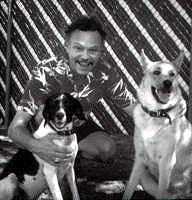
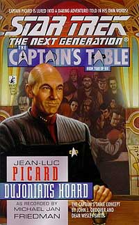
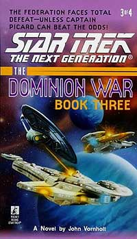

|
Jornadas
literrias
 Escrever
um livro no trabalho fcil. Escrever um livro baseando-se
num universo ficcional rico e famoso, e cujos direitos pertence a
uma poderosa instituio, mais difcil ainda. H regras a
cumprir, se o autor deseja ver sua obra publicada. Por exemplo: Escrever
um livro no trabalho fcil. Escrever um livro baseando-se
num universo ficcional rico e famoso, e cujos direitos pertence a
uma poderosa instituio, mais difcil ainda. H regras a
cumprir, se o autor deseja ver sua obra publicada. Por exemplo:
1. As histrias no devem ter como astros nenhum personagem novo
ou de outro universo ficcional. Ou seja, a histria deve ser
sempre sobre Kirk e cia., Picard e cia. etc.
2. No se pode matar um personagem das sries, ou provocar uma
mudana definitiva em personagens ou no universo de Jornada
nas Estrelas. explicitamente proibido, por exemplo, que os
personagens tenham filhos, ou que se casem. primordial que o
status quo seja restabelecido ao final do livro.
3. Relaes sexuais descritas de forma explcita so
proibidas.
4. No se pode misturar as tripulaes de vrias sries em
uma nica trama.
E por a vai...
Uma vez que o escritor resolva assumir esse desafio, sobre o que
escrever? A meu ver existem, no universo literrio de Jornada
nas Estrelas, poucas possibilidades. A primeira escrever
uma trama que se passa simultaneamente s aventuras mostradas nas
sries. Ou seja, o livro seria como um novo episdio, mostrando
uma aventura ocorrida, por exemplo, entre o episdio "Encounter
at Farpoint" e "The
Naked Time" ( o caso do livro "Navio
Fantasma", j lanado no Brasil pela editora Aleph).
Pode-se tambm escrever histrias envolvendo realidades
alternativas, ou linhas temporais diferentes da exibida na televiso.
A Paramount no costuma olhar com bons olhos esse tipo de
abordagem, que, apesar disso, j rendeu timos livros, como
"Tempo Assassino" e "Imzadi".
A
ltima opo usar como pano de fundo eventos ocorridos na
cronologia oficial, mas mostr-los sob uma perspectiva diferente.
Por exemplo, um livro narrando o que Janeway fazia quando houve a
batalha de Wolf 359, ou o que Kirk fez em sua aposentadoria aps
o sexto filme, antes de ser visto novamente em "Generations".
Esse ltimo livro existe, o sensacional "The Ashes of Eden".
O que nos trs ao tema dessa coluna. Quem acompanhava a srie Deep
Space Nine, nos Estados Unidos, sempre se perguntava: "o
que Picard estar fazendo durante a guerra contra o Dominion?"
Se a Federao est em guerra contra o Dominion, e perdendo,
por que a Enterprise nunca vista nas batalhas? Afinal, no filme
"Primeiro Contato" a Enterprise-E descrita
como a melhor nave da Frota; nada mais natural que estivesse
envolvida na guerra. A resposta a essa pergunta veio, na forma de
livro, em "Star Trek: The Dominion War".
"The Dominion War" foi uma srie especial de quatro
livros lanada nos EUA pela Pocket Books, a editora oficial dos
livros de Jornada nas Estrelas. A srie consiste de quatro
volumes, dois estrelados pela tripulao da Enterprise-E (os
volumes um e trs, escritos por John Vornholt) e dois sendo
novelizaes do ltimo episdio da quinta temporada de Deep
Space Nine e dos seis primeiros episdios da sexta (os volumes
dois e quatro, novelizaes de Diane Carey).
No
primeiro livro, vemos a Enterprise mais que envolvida na guerra. A
nave sofreu srias avarias em sua ltima batalha contra a aliana
Dominion-Cardssia e volta para Base Estelar 209 para reparos.
Enquanto isso, nas Badlands, Ro Laren obrigada a abandonar o
mundo habitado pelos Maquis em razo da chegada de tropas
Cardassianas.
Antes de partir, porm, Laren acaba descobrindo que os Dominion
esto desenvolvendo um projeto audacioso em espao Cardassiano:
a construo de um buraco de minhoca (ou fenda espacial, como
traduzido na dublagem de DS9 no Brasil) artificial, ligando
o quadrante Alfa ao quadrante Gama e possibilitando que novas
naves Dominion reforcem as tropas na guerra. O buraco de minhoca
Bajoriano fora minado pelo Capito Sisko, pouco antes de os
Cardassianos conquistarem DS9.
De posse dessa informao, Laren parte para espao da Federao,
disposta a divulg-la para a Frota Estelar. Acaba encontrando
Jean-Luc Picard que, alarmado, entra em contato com o Comando da
Frota e recebe uma perigosa misso: disfarado de Bajoriano, e a
bordo da pequena e indefesa nave de Ro Laren (a Orb of Peace),
Picard deve entrar em espao inimigo, localizar o buraco de
minhoca artificial e destru-lo. Em poucas palavras, uma misso
suicida.
Junto com Geordi La Forge (tambm disfarado de Bajoriano) e Ro
Laren, partem na perigosa misso, deixando Data em uma nave
auxiliar pronto para detectar um sinal subespacial em caso de
perigo, e a Enterprise na Base Estelar 209, sob reparos.
 O
livro eletrizante, escrito com maestria por Vornholt, o que
ajuda a encobrir alguns defeitos da trama. frustrante ver a
Enterprise em doca seca ao longo da histria. Com certeza merecamos
um livro que realmente descrevesse seu envolvimento na guerra. Alm
disso, h pouco aproveitamento dos personagens da Nova Gerao.
 O
livro uma aventura do capito Picard. Vemos uma presena
muito pequena de Deanna e da doutora Crusher, Riker tem um caso
amoroso com uma almirante e s. Alm disso, a prpria Pocket
Books lanou, tambm em 1998, um livro com tema muito parecido
(o volume dois da srie "The Captain's Table", que tambm
mostra Picard disfarado em uma nave com poucas defesas, em uma
misso de alto risco).
Problemas de criatividade parte, o livro nos prende a ateno
do comeo ao fim. Tudo d errado ao longo da viagem da Orb of
Peace em espao Cardassiano, e eles so obrigados a enfrentar
desde naves de patrulha at uma invaso de piratas. Picard usa
de toda sua astcia para completar sua misso, que parece ser
cada vez mais suicida pois, como o passar do tempo, a Orb of Peace
fica cada vez mais danificada e indefesa.
 A
segunda parte da trama, narrada no terceiro volume da srie,
infelizmente, uma decepo. Ao contrrio da primeira parte,
a histria no funciona, o ritmo lento, e a soluo
insatisfatria. No minha inteno estragar a surpresa de
possveis leitores da obra, mas difcil de acreditar que uma
histria que se desenrola por dois livros, num total de 538 pginas,
seja concluda s pressas, em apenas 40 pginas. Afinal, a misso
suicida que Picard tinha de concluir a qualquer preo deveria ser
o clmax da trama. O resultado, narrado em meras 30 pginas, soa
mais como um anticlmax.
O mais gritante, porm, que o autor aparentemente esqueceu que
dezenas de oficiais da Frota estavam trabalhando como escravos no
projeto do Dominion. Esses oficiais so simplesmente deixados
para trs, condenados a morte certa. Culpo o autor, sim, por
deixar de lado uma das principais qualidades de Jornada --a
preocupao com a vida, em todas as suas formas. Nunca se viu,
em nenhuma das sries ou filmes, um capito sacrificar algumas
pessoas para o benefcio de bilhes. Qualquer um deles teria
encontrado um meio de salvar os oficiais. Porm, isso nem chega a
ser discutido durante a histria. Picard aparentemente se
esqueceu dos prisioneiros, e isso, penso eu, no respeita a
integridade do personagem.
Mas, afinal, toda essa histria no considerada como parte da
cronologia oficial de Jornada nas Estrelas, ento nosso
amado capito deve escapar da corte marcial!
Fernando
Rodrigues editor do boletim Base News e escreve regularmente
sobre a Nova Gerao para o Trek Brasilis
|